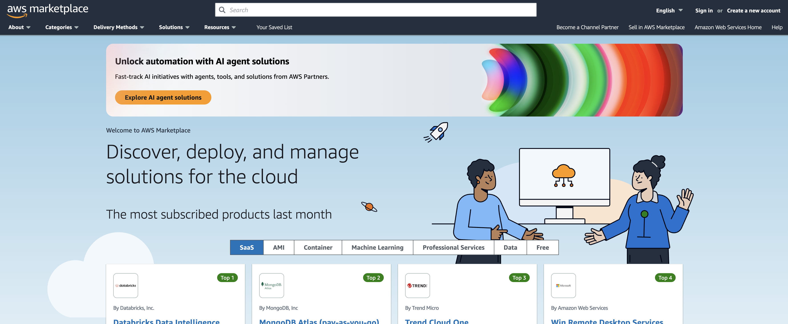
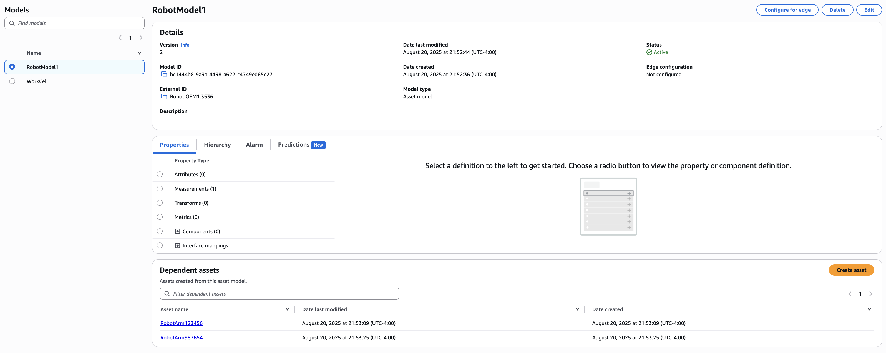

📍 New York, NY
University of Michigan | B.S.E. in Computer Science | Minor in Electrical Engineering | Dec 2022
I am a Software Development Engineer II at Amazon Web Services, where I design and deliver scalable full-stack solutions within a high-availability production environment. Since joining AWS in March 2023, I have gained deep experience with distributed systems, microservice architectures, and continuous deployment practices.
I am particularly passionate about the fintech space, where technology and finance intersect to solve complex, high-impact problems. My experience in building resilient, secure, and customer-centric systems directly overlaps with the demands of fintech—where scalability, reliability, and compliance are essential. I am excited by opportunities to apply my expertise in cloud-native architectures, system monitoring, and end-to-end development to innovations in payments, trading systems, and financial infrastructure.
Outside of work, I enjoy running, traveling, skiing, surfing, golfing, reading, cooking, and experimenting with new frameworks and development stacks.
 As a Software Development Engineer II, I design, build, and maintain scalable software systems in a high-availability production environment.
I specialize in full-stack development, creating solutions tailored to customer needs, and work within an AWS microservices architecture using continuous deployment practices.
During on-call rotations, which I have accumulated for a total of 91 days, I ensure system reliability by proactively troubleshooting and resolving production issues.
As a Software Development Engineer II, I design, build, and maintain scalable software systems in a high-availability production environment.
I specialize in full-stack development, creating solutions tailored to customer needs, and work within an AWS microservices architecture using continuous deployment practices.
During on-call rotations, which I have accumulated for a total of 91 days, I ensure system reliability by proactively troubleshooting and resolving production issues.
Key contributions include:
AWS Marketplace | Apr 2024 - Present

-
AWS Marketplace Multi-Currency Support: Designed and implemented backend changes, authored a security overview, and developed a comprehensive integration test plan and suite to enable support for multiple currencies from a compliance perspective.
Read more
-
AWS Marketplace Korea Launch: Identified and resolved seven legal risks associated with the launch, integrated six new APIs, owned the full integration test plan and suite, and designed and built a service that synced seller location updates from a single upstream provider to three downstream services.
Read more
AWS IoT SiteWise | Mar 2023 - Apr 2024
AWS IoT SiteWise Bulk Import/Export Metadata: Led backend Java and frontend React development for the feature. Conducted pentesting, security reviews, and UI/UX reviews to ensure system integrity and user experience. Cleaned up the team's Content Security Policy (CSP), implemented load testing, and wrote custom logic to manage flashbar states. Developed a comprehensive integration test plan, synthetic canary tests, and resolved serialization issues ahead of launch to ensure robust operation.
Read more
 AWS IoT SiteWise User-Defined Unique Identifiers: Owned backend Java and frontend React development. Incorporated UI/UX feedback, led pentest and security reviews, and implemented integration and synthetic canary tests for both backend and frontend. Detected and resolved an AuthN/AuthZ mix-up and a serialization issue with the "/" character weeks ahead of launch, ensuring a seamless rollout. Provided guidance on proper delimiter usage and validated functionality across systems.
Read more
AWS IoT SiteWise User-Defined Unique Identifiers: Owned backend Java and frontend React development. Incorporated UI/UX feedback, led pentest and security reviews, and implemented integration and synthetic canary tests for both backend and frontend. Detected and resolved an AuthN/AuthZ mix-up and a serialization issue with the "/" character weeks ahead of launch, ensuring a seamless rollout. Provided guidance on proper delimiter usage and validated functionality across systems.
Read more


📖 RhythmIQ Low-Level Design Document
Optimized data flow for low-latency music recommendation, modular Java architecture with AWS Lambda,
and real-time context detection via sensor data.
View PDF 📄
📖 RhythmIQ High-Level Design Document
Problem definition, project scoping, scalable cloud-native architecture (AWS),
and GitHub CI/CD with Terraform CDK.
View PDF 📄
This project is a feature-rich music streaming application that allows users to create and listen to personalized playlists based on their listening habits.
The app integrates with various music APIs to provide real-time streaming and recommendations.
One of the core features is a recommendation engine that suggests songs using a combination of collaborative filtering and content-based filtering.
The backend is powered by AWS Lambda for efficient and scalable processing, with Dagger used to manage dependencies within the Java codebase.
Multivariable Covariance of Inverted Yield Curve Day Trader Bot
Sept 2023 - Dec 2023

Often when deciding when to buy into the market, I take into account economic factors like inflation, interest rates,
GDP, and even the inverted yield curve. To test a theory about their relation to day-to-day trading, I wrote a program that would
find the covariance of these factors each with inverted yield in order to calculate a confidence score for trading each day.
With this confidence score, I was able to design a way to trade within reason on a per-minute cadence.
Between days, I wrote this data to DDB and S3 for future analysis.
The end goal is to incorporate Amazon SageMaker to improve the ML characteristics of the program.
See the project structure on the project GitHub.
Electric Vehicle Explorer & Breakeven Calculator Website
July 2023 - Aug 2023

Check out the website here: EV Calculator
To gain more experience with Typescript and React, I created a website that displays sustainable fuel vehicles.
The project helped me learn React app setup with ESLint, Jest, Babel, Webpack, API calls, hooks, pages, and components.
Some challenging features included debounced searching, sorting, filtering, and pagination.
More information: GitHub Repo.
- Languages: Java, Python, Node.js (TypeScript/JavaScript), C++, Ruby, SQL, Swift, Dart, CSS, HTML, MATLAB
- Frontend: React, Flutter, Express.js, Vue.js, iOS, Puppeteer, Selenium, TailwindCSS, jQuery, Ruby on Rails, Figma
- Backend: Redis, OpenAPI, FastAPI, Flask, Apache, Spring Boot, DynamoDB, MySQL, PostgreSQL, RDS
- DevOps: Terraform, CDK, Jenkins, Docker, 91 days 24/7 primary on-call at AWS, GitHub Actions, CloudWatch
- AI/ML: ElevenLabs, OpenAI, Amazon Bedrock, Amazon SageMaker, Apple Core ML, PyTorch, TensorFlow, n8n
- 📕 AWS Solutions Architect Associate
- 📘 AWS Certified Developer
- 📗 AWS Cloud Practitioner
M-HEAL
Internal Vice President | March 2021-April 2022
Michigan Health Engineered for All Lives is a student-run organization of 200 students at
the University of Michigan focused on
improved healthcare and medical technologies all around the world. The club features 12
independent project teams
that cover a range of global health problems, including developing hypothermia therapy for
neonates with asphyxia as well as
improving nutrition for children with cerebral palsy in Bangladesh.
My job as IVP was to manage and oversee the progress of all 12 remarkable projects and
provide resources and opportunities for
each of the teams to grow. I helped organize design reviews for the whole club to attend,
facilitate recruiting, meet with external partners,
and work closely with our President and External Vice President to direct the rest of our
14-person board.

Solar Fridge is a student-run project team that is a part of Michigan Health
Engineered for All Lives. Our 15 member team is iterating through insulation and
thermoelectric
refridgeration designs in order to cool vaccine coolers. We work with a community
partner in Rincon Claro, Dominican Republic to elicit requirements.
Many developing countries lack the resources to consistently provide electricity to
residents, and natural disasters
further deplete electricity availability.
We have improved the amount of time that dorm fridges can sustain a 2-8oC range
by over 800%, and our goal is to extend this
range so that the clinic can maintain vaccine viability for at least 72 hours when the power
shuts off.
As the project team lead, I scheduled and lead meetings, gave presentations to our club,
applied for grants and
managed finances, attended workshops, communicated with our community partner, and lead
recruitment. I also oversaw a
lot of our project design and am particularly focused on creating a touchscreen LCD digital
data logger that displays
current and previous vaccine temperatures. Also, I created a PCB to condense the
thermocouple leads and implemented
the Arduino code driver that controls the display and SD card interface.
More information can be found at our team
home page.
TechLab at Mcity
Fall 2020 Cohort Member

During the fall semester of my junior year, I worked on a team of four students as part
of a
company-in-residence program. Our team worked exclusively with May Mobility, an
autonomous shuttle startup
that has deployed shuttles in several Michigan communities such as Ann Arbor, Detroit,
and Grand Rapids, as
well as in Providence, RI.
Our team developed a hardware tool that improved testing procedures for the company,
which allowed for more
consistent test results and an ability to demonstrate safety. I personally worked on the
wiring component of
the tool to make sure that it works in non-ideal conditions and can be easily set up by
test engineers.
It would be helpful to show some pictures of the product and detail more about how it
works,
but this information is restricted by the non-disclosure agreement.
Phone-Free Driving Device
Owner | Sep 2019 - Dec 2019
As part of the UM 3D Printing Club, a handful of teams entered into the GM Additive
Manufacting
Design Competition. The goal of the competition was to be able to design an improvement to a
car
with the aid of a 3D printer.

In order to prevent drivers from texting and driving, I designed a phone holder that
restricted
phone access unless the car was at a complete stop.
I designed the parts in AutoCAD in the shape of a box with a slot to fit a phone into.
Once I 3D printed the part, I was able to attach a Servo motor to the inside as part of a
mechanism to
open and close the lid. I controlled this using an Arduino that attached to the back and
also interfaced
with a GPS module (that determined whether the car was in motion) and an ultrasonic sensor
(for hands-free opening of the lid).
I was honored to place 2nd in the competition, and I developed substantial design
experience with Arduino and
3D printing from the project.
SmartCycle Machine Learning Recycling App
May 2020-Sept 2021

It becomes more apparent every year that climate change is rapidly changing the world. My mission
is to
help stop the harmful effects of climate change by using technology. Recently, I took
some time to do
a personal project to encourage recycling.
The only incentive to recycling in most US states is a moral obligation to the environment. In
other countries
such as Germany, reverse vending machines for recycling are
much more widespread.
I wanted to make an application and sensor that would affordably adapt regular recycling bins to
function as
reverse recycling machines, while still rewarding recyclers. To start, users would be able to
use the points at local
restaurants and stores. In the future, it would be revolutionary to convert the point system
directly into a monetary system
to sync with bank accounts, much like how reverse vending machines reward recyclers with money.

Currently, my app only runs on iOS, but I hope to be able to develop
the technology and publish it to the app store some day.
I was able to take advantage of the IBM Cloud Machine Learning algorithm to train data on
thousands of images of
bottles, cans, glasses, and other common recyclable items that I pulled from the internet
. I also crafted the algorithm to discriminate against
many common reusable water bottles to prevent people from cheating the system. The packaged data
was then trained using the Apple CoreML program, which could be easily
integrated into my Swift files that I made for the different screens of the app. Data for each
user such as name, email,
points accumulated, and rewards were backed up using Google Firebase.